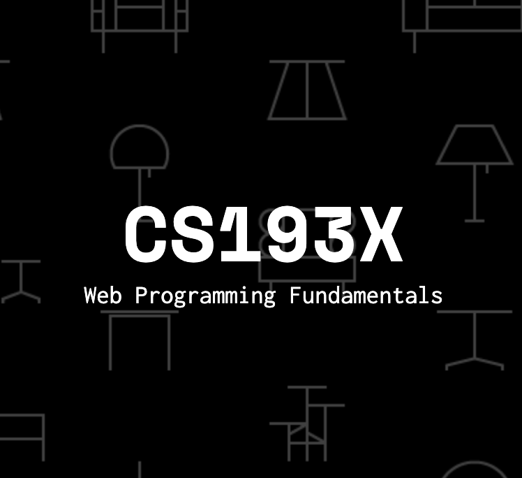

1.
CS 61B (Berkeley)
Fundamental dynamic data structures, including linear lists, queues,
trees, and other linked structures; arrays strings, and hash tables.
Storage management. Elementary principles of software engineering.
Abstract data types. Algorithms for sorting and searching.
Introduction to the Java programming language.
2.
CS 61C (Berkeley)
The internal organization and operation of digital computers. Machine architecture,
support for high-level languages (logic, arithmetic, instruction sequencing) and
operating systems (I/O, interrupts, memory management, process switching).
Elements of computer logic design. Tradeoffs involved in fundamental architectural
design decisions.

3.
CS 193X (Standford)
The internal organization and operation of digital computers. Machine architecture,
support for high-level languages (logic, arithmetic, instruction sequencing) and
operating systems (I/O, interrupts, memory management, process switching).
Elements of computer logic design. Tradeoffs involved in fundamental architectural
design decisions.
